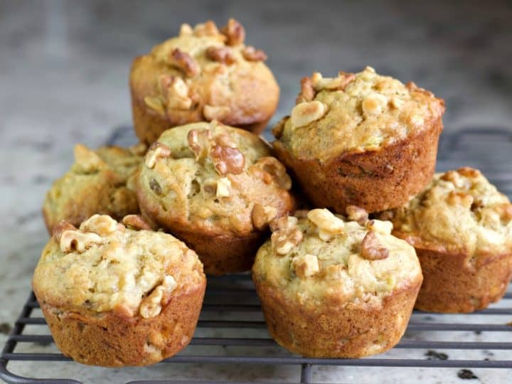

Banana walnut muffins

Ingredients
- 4 ripe/overripe bananas
- 2 eggs
- 2 cups of all-purpose flour
- 1.5 teaspoons of baking soda
- 1 cup of brown sugar
- 1 teaspoon of pure vanilla extract
- 3/4 cup of melted butter cooled to room temp. (equal to 1.5 sticks)
- 1/2 teaspoon of salt
- 1/2 cup pecans chopped (works with any other nut, or substitue with choclate chips)
Directions
- Before you start cooking:Preheat the oven to 375 Ferinhite (190 Celsius) and butter/oil 2 muffin trays
- Get 1 large bowl and add the salt, flour and baking soda. Then put this somewhere to the side for later.
- Get a small bowl: In it add 2 bananas and mash them into a textured slime using a fork.
- After they're soft using a wisk or electric mixer with the wisk attatchment combine the other two bananas and sugar together for 3 minutes.
While mixing add the eggs, butter and vanilla making sure to mix well. While whisky make sure to clean the sides of the bowl to get extra batter that may be on the sides.
- After whisking for 2 minutes, add the dry ingredients. Allowing them to be mixed in until fully incorperated.
- Once you finished wisking, get a rubber spatula and begin to fold in the pecans (or any substitue)
in with the mashed banana.
- Once the pecans are mixed into the batter, using a spoon fill the muffin tray until each container is about halfway full. After which
tap the muffin container on the counter and give it a small shake to help get rid of air bubbles.
- Put the muffins in the oven for 18-20 minutes, using a toothpick to check they're cooked all the way through.(this is done by poking the toothpick
through the middle of a muffin(s), if anything sticks to the toothpick then they need to cook longer, if after 20min they're still not cooked leave them in the oven
checking with the toothpick method every 2-5 minutes keeping a close eye that they don't burn)
- Once the muffins are finished cooking, take the tin out and let sit for 5 minutes. After which carefully take the muffins out
and place onto a plate/other area to finish cooling.
Congrats You've made your muffins!
Contact Me
My email
The University of Montana
32 Campus Dr
Missoula, MT 59812
This is the link to the origional recipe. I made a small spin off of this version, however credit mostly goes to Tyler Florance. Please give the site a visit for more great recipes!